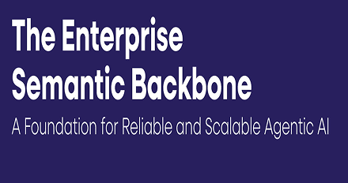

Enterprise AI has hit a wall. While 74% of organizations are investing heavily, execution remains shallow, only 28% have deployed an enterprise-wide AI strategy, and 95% report zero return on initial GenAI investments. To investigate this gap, MarketsandMarkets surveyed 380+ enterprise leaders alongside independent benchmarks to determine the precise architecture required to scale autonomous, agentic AI. The research revealed a massive system fragmentation bottleneck: organizations manage an average of 957 applications, leaving half of all AI agents operating in isolated silos because they lack unified, machine-executable context.
This white paper outlines a critical architectural shift from temporary overlays to a graph-based, vendor-lock-in-free knowledge infrastructure. The study reveals that standard context layers and thin BI semantic layers (like the OSI initiative) leave agents dependent on inconsistent LLM guessing. Instead, it highlights how Graphwise delivers a standards-based Semantic Backbone built on W3C graph standards (RDF/OWL/SKOS). By pairing this with an operational “dashcam” called the Context Graph and executing SHACL constraints via platforms like Graphwise, this infrastructure achieves 100% explainable reasoning, a 2x accuracy boost over schema-less RAG, and a 70% to 90% reduction in AI hallucinations.
Download this white paper to discover the exact structural roadmap your organization needs to establish a good foundation, activate autonomous enterprise intelligence, and successfully deploy trusted, scalable Agentic AI.